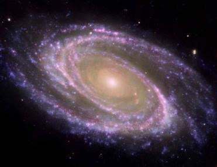

Step 1: ―Each soul shall know what it has put forward.‖
ধাপ 1: "প্রত্যেকটি আত্মা জানতে পারবে সে কি এগিয়ে রেখেছে।"
A resurrected human will have no memory and will not know any language. After resurrection, his brain will be infused with memory data from the Lawh-Mahfuz, at which point he will know everything. Mentally, he will be the same person as he was on the Earth. Humans will pray for the Judgment, and the marshaling will begin. A written record of deeds (Amal- Nama) will be given to each person, as mentioned in the last verse of this section, ―Each soul shall know what it has put forward‖
একজন পুনরুত্থিত মানুষের কোন স্মৃতি থাকবে না এবং কোন ভাষা জানবে না। পুনরুত্থানের পর, তার মস্তিষ্ক লহ-মাহফুজের স্মৃতির তথ্য দ্বারা সংমিশ্রিত হবে, তখন সে সবকিছু জানতে পারবে। মানসিকভাবে, তিনি একই ব্যক্তি হবেন যেমন তিনি পৃথিবীতে ছিলেন। মানুষ বিচারের জন্য প্রার্থনা করবে, এবং মার্শালিং শুরু হবে। কাজের একটি লিখিত রেকর্ড (আমল-নামা) প্রতিটি ব্যক্তিকে দেওয়া হবে, যেমনটি এই অংশের শেষ আয়াতে উল্লেখ করা হয়েছে, "প্রত্যেক আত্মা জানতে পারবে সে কী এগিয়ে রেখেছে"
Step 2: ―And when the Jannaat is brought near.‖
ধাপ 2: "এবং যখন জান্নাত নিকটে আনা হবে।"
Next, the Jannaat will approach the Land of Judgment. It will be located in the western super space, beyond the Barzakh, as mentioned in this verse: ―And when the Jannaat is brought near.‖ The Barzakh will be thin at that time, like an astronomical veil. Everyone will feel joy at the sight of the Jannaat, as by then, people will no longer be certain whose religion was correct. Mentally, they will be the same as they were on the Earth.
এরপর, জান্নাত বিচারের ভূমির কাছে যাবে। এটি পশ্চিম সুপার স্পেসে অবস্থিত হবে, বরজাখের বাইরে, যেমন এই আয়াতে উল্লেখ করা হয়েছে: "এবং যখন জান্নাতকে নিকটে আনা হবে।" সেই সময় বরযাখ একটি জ্যোতির্বিদ্যার পর্দার মতো পাতলা হবে। জান্নাত দেখে সবাই আনন্দ অনুভব করবে, তখন মানুষ আর নিশ্চিত হবে না কার ধর্ম সঠিক ছিল। মানসিকভাবে, তারা পৃথিবীতে যেমন ছিল তেমনই থাকবে।
Step 3: ―When the Blazing Fire is kindled to fierce heat.‖
ধাপ 3: "যখন জ্বলন্ত আগুন প্রচণ্ড তাপে প্রজ্বলিত হয়।"
The galaxies are the objects of Hell. At that time, they will be within the compact universe (Thaqal), but they will be ignited, and the Thaqal will be filled with fire. It will be visible in the super space from the Land of Judgment, as mentioned in this verse: ―When the blazing fire is kindled to fierce heat.‖ Step 4: ―When the world on high is unveiled.‖
ছায়াপথগুলো নরকের বস্তু। সেই সময়ে, তারা কম্প্যাক্ট মহাবিশ্বের (থাকাল) মধ্যে থাকবে, তবে তারা প্রজ্বলিত হবে এবং থাকাল আগুনে পূর্ণ হবে। এটি বিচারের ভূমি থেকে সুপার স্পেসে দৃশ্যমান হবে, যেমন এই আয়াতে উল্লেখ করা হয়েছে: "যখন জ্বলন্ত আগুন প্রচণ্ড তাপে প্রজ্বলিত হয়।"
Next, the Arsh will descend. The Arsh is the realm above, far larger than the universes. It will be visible above the heads. This is mentioned in the verse: ―When the world on high is unveiled.‖ The Kursi will descend upon the Land of Judgment. From the center of the Land of Judgment, if one looks toward the Kursi, the Jannaat will be on the right, the Thaqal on the left, and the Arsh above the head.
এরপর আরশ নামবে। আরশ হল উপরের রাজ্য, মহাবিশ্বের চেয়ে অনেক বড়। এটি মাথার উপরে দৃশ্যমান হবে। এটি আয়াতে উল্লেখ করা হয়েছে: "যখন উচ্চ বিশ্ব উন্মোচিত হবে।" কুরসি বিচারের ভূমিতে অবতরণ করবে। হাশরের ভূমির কেন্দ্র থেকে কুরসির দিকে তাকালে জান্নাত ডানদিকে, থাকাল বাম দিকে এবং আরশ মাথার উপরে থাকবে।
Step 5: ―When the scrolls are laid open.‖
ধাপ 5: "যখন স্ক্রোলগুলি খোলা হয়।"
The Arsh holds the CCU (Central Computer of the Universes), and its disc (Lawh-Mahfuz) preserves the record of everything. The CCU operates through Sidratul- Muntaha, and its tentacles will extend over the Land of Judgment to support the trials, as mentioned in the fifth verse from the bottom: ―When the scrolls are laid open.‖
আরশ সিসিইউ (মহাবিশ্বের কেন্দ্রীয় কম্পিউটার) ধারণ করে এবং এর ডিস্ক (লাহ-মাহফুজ) সবকিছুর রেকর্ড সংরক্ষণ করে। সিসিইউ সিদরাতুল-মুনতাহার মাধ্যমে কাজ করে, এবং এর তাঁবু বিচারকে সমর্থন করার জন্য বিচারের ভূমিতে প্রসারিত হবে, যেমনটি নীচের পঞ্চম আয়াতে উল্লেখ করা হয়েছে: "যখন স্ক্রোলগুলি খোলা হয়।"
Step 6: ―When the female buried alive is questioned: For what crime she was killed?‖
ধাপ 6: "যখন জীবিত কবর দেওয়া মহিলাকে জিজ্ঞাসা করা হয়: কোন অপরাধে তাকে হত্যা করা হয়েছিল?"
The Balance will be set, and Allah in form will appear. The Judgment will begin, as mentioned in this verse: ―When the female buried alive is questioned, ―For what crime she was killed?‖‖
ভারসাম্য স্থির হয়ে যাবে এবং আল্লাহ রূপে আবির্ভূত হবেন। বিচার শুরু হবে, যেমন এই আয়াতে উল্লেখ করা হয়েছে: "যখন জীবন্ত কবর দেওয়া মহিলাকে জিজ্ঞাসা করা হবে, "কি অপরাধে তাকে হত্যা করা হয়েছিল?"
Step 7: ―When the souls are sorted out.‖
ধাপ 7: "যখন আত্মাগুলি সাজানো হয়।"
People will be sorted through Judgment; some will be granted entry into the Jannaat, while others will be destined for Hell, as mentioned in this verse: ―When the souls are sorted out.‖
বিচারের মাধ্যমে মানুষ সাজানো হবে; কিছুকে জান্নাতে প্রবেশের অনুমতি দেওয়া হবে, আর অন্যদের নিয়তি হবে জাহান্নামে, যেমনটি এই আয়াতে উল্লেখ করা হয়েছে: "যখন আত্মাগুলিকে সাজানো হবে।"
So verily I swear by the receding ships disappear, and the night as it departs, and the dawn as it breathes.
তাই আমি শপথ করে বলছি পতনশীল জাহাজগুলি অদৃশ্য হয়ে যায়, এবং রাতের যখন এটি চলে যায় এবং ভোরের যখন এটি শ্বাস নেয়।
The stars are not randomly scattered throughout space; they are organized into systems known as galaxies. In the Quran, a galaxy is referred to as 'Mawaqin- Nujumi.' Here, 'Mawaqi' means 'houses' and 'Nujumi' means 'stars.' Therefore, 'Mawaqin-Nujumi' translates to 'houses of stars,' which refers to galaxies.
নক্ষত্রগুলো এলোমেলোভাবে মহাশূন্যে ছড়িয়ে ছিটিয়ে নেই; তারা গ্যালাক্সি নামে পরিচিত সিস্টেমে সংগঠিত হয়। কুরআনে একটি ছায়াপথকে 'মাওয়াকিন-নুজুমি' বলা হয়েছে। এখানে 'মাওয়াকী' অর্থ 'ঘর' এবং 'নুজুমি' অর্থ 'নক্ষত্র।' অতএব, 'মাওয়াকিন-নুজুমি' অনুবাদ করে 'নক্ষত্রের ঘর', যা গ্যালাক্সিকে বোঝায়।
FIGURE 81.1: Galaxy M 81

চিত্র 81_1 / Figure 81_1
চিত্র 81.1: Galaxy M 81
চিত্র 81_1 / Figure 81_1
―But nay, I swear by the Houses of the Stars (Mawaqin-Nujumi). And, indeed it surely a swear, if you know great‖ [Al Quran 56: 75–76]
কিন্তু না, আমি শপথ করছি তারার ঘরের (মাওয়াকিন-নুজুমি)। এবং, এটি অবশ্যই একটি শপথ, যদি আপনি মহান জানেন" [আল কুরআন 56: 75-76]
In the Quran, a galaxy is called ―sphere‖ as well: ―It is not permitted to the sun to outstrip the moon, nor can the night outstrip the day. And all are in a ‗sphere‘ (Milky Way galaxy) they are floating.‖ [Al Quran 36: 40]
কুরআনে, একটি গ্যালাক্সিকে "গোলক" বলা হয়েছে: "সূর্যের জন্য চাঁদকে ছাড়িয়ে যাওয়ার অনুমতি নেই এবং রাতও দিনকে ছাড়িয়ে যেতে পারে না। এবং সকলেই একটি 'গোলাকার' (মিল্কিওয়ে গ্যালাক্সি) তারা ভাসছে।'' [আল কুরআন 36:40]
In the above verse, 'falakin' refers to a sphere or domain of space. The sun and the moon are floating within this domain. Therefore, it refers to the Milky Way galaxy. In the verses under discussion, the galaxies are referred to as ships, resembling space-ships that carry stars and other celestial objects: "So verily I swear by the receding ships (space-ships) disappear…" Here, the phrase "receding ships disappear" refers to galaxies that are moving away and gradually fading from view. There are approximately 200 billion galaxies in the visible universe, each containing hundreds of billions of stars that emit light. Light is eternal and cannot be destroyed. If the galaxies were not receding, the light from all the stars would eventually reach the Earth, and every line of sight would end on the surface of a star. The entire sky would appear as bright as the sun. Scientists estimate that, if the galaxies were not receding, the brightness would be forty thousand times greater than the midday sun, resulting in constant, blinding light throughout space—there would be no night, only an unrelenting, sunlit brightness. However, the galaxies are receding, causing them to fade and eventually disappear. As a result, there are dark nights and sunlit days on Earth. A German scientist, Heinrich Wilhelm Matthias Olbers, observed this in 1823. He argued that the darkness of the night contradicts the assumption of a static, infinite, and eternal universe. No one had a satisfactory answer to his argument, so it became known as 'Olber‘s Paradox.' In reality, no one could have imagined that such a vast universe could be expanding! In the 1920s, American scientist Edwin Hubble discovered that the galaxies were receding, providing evidence that the universe was expanding. And, the verses under discussion clearly state that the universe has been expanded to create the darkness of night.
উপরের আয়াতে, 'ফালাকিন' একটি গোলক বা মহাকাশের ডোমেইনকে বোঝায়। এই ডোমেইনের মধ্যে সূর্য এবং চাঁদ ভাসছে। অতএব, এটি মিল্কিওয়ে গ্যালাক্সিকে বোঝায়। আলোচ্য আয়াতগুলিতে, গ্যালাক্সিগুলিকে জাহাজ হিসাবে উল্লেখ করা হয়েছে, নক্ষত্র এবং অন্যান্য মহাকাশীয় বস্তু বহনকারী মহাকাশ-জাহাজের অনুরূপ: "সুতরাং সত্যই আমি শপথ করে বলছি পিছিয়ে যাওয়া জাহাজগুলি (মহাকাশ-জাহাজ) অদৃশ্য হয়ে গেছে..." এখানে, "পতনশীল জাহাজগুলি অদৃশ্য হয়ে গেছে" শব্দগুচ্ছটি গ্যালাক্সিগুলিকে বোঝায় যা দূরে সরে যাচ্ছে এবং দৃশ্য থেকে দূরে সরে যাচ্ছে। দৃশ্যমান মহাবিশ্বে আনুমানিক 200 বিলিয়ন গ্যালাক্সি রয়েছে, প্রতিটিতে কয়েকশ বিলিয়ন তারা রয়েছে যা আলো নির্গত করে। আলো চিরন্তন এবং ধ্বংস করা যায় না। যদি গ্যালাক্সিগুলি হ্রাস না পায়, তবে সমস্ত নক্ষত্রের আলো শেষ পর্যন্ত পৃথিবীতে পৌঁছে যেত এবং দৃষ্টিশক্তির প্রতিটি লাইন একটি নক্ষত্রের পৃষ্ঠে শেষ হয়ে যেত। পুরো আকাশ সূর্যের মতো উজ্জ্বল হয়ে উঠবে। বিজ্ঞানীরা অনুমান করেন যে, যদি ছায়াপথগুলি হ্রাস না পায়, তবে মধ্যাহ্ন সূর্যের চেয়ে চল্লিশ হাজার গুণ বেশি উজ্জ্বলতা হবে, যার ফলে মহাকাশ জুড়ে ধ্রুবক, অন্ধ আলো থাকবে-কোন রাত থাকবে না, কেবল একটি অবিরাম, সূর্যালোক উজ্জ্বলতা। যাইহোক, ছায়াপথগুলি পিছিয়ে যাচ্ছে, যার ফলে তারা বিবর্ণ হয়ে যাচ্ছে এবং শেষ পর্যন্ত অদৃশ্য হয়ে যাচ্ছে। ফলস্বরূপ, পৃথিবীতে অন্ধকার রাত এবং সূর্যালোক দিন রয়েছে। একজন জার্মান বিজ্ঞানী, হেনরিখ উইলহেম ম্যাথিয়াস ওলবারস, 1823 সালে এটি পর্যবেক্ষণ করেছিলেন। তিনি যুক্তি দিয়েছিলেন যে রাতের অন্ধকার একটি স্থির, অসীম এবং চিরন্তন মহাবিশ্বের অনুমানের সাথে বিরোধিতা করে। কারো কাছে তার যুক্তির সন্তোষজনক উত্তর ছিল না, তাই এটি 'Olber’s Paradox' নামে পরিচিত হয়। বাস্তবে, কেউ কল্পনাও করতে পারেনি যে এত বিশাল মহাবিশ্ব সম্প্রসারিত হতে পারে! 1920-এর দশকে, আমেরিকান বিজ্ঞানী এডউইন হাবল আবিষ্কার করেছিলেন যে ছায়াপথগুলি হ্রাস পাচ্ছে, যা প্রমাণ দেয় যে মহাবিশ্ব প্রসারিত হচ্ছে। এবং, আলোচ্য আয়াতগুলি স্পষ্টভাবে বলে যে মহাবিশ্বকে সম্প্রসারিত করা হয়েছে রাতের অন্ধকার সৃষ্টি করার জন্য।
―And the Sky, We constructed it with the hand, and Me for expanders‖ [Al Quran 51:47]
"এবং আকাশ, আমরা এটি হাতে তৈরি করেছি এবং আমি সম্প্রসারণের জন্য" [আল কুরআন 51:47]
However, in light of the Quran, the universe is currently contracting in diameter from the outermost sky. The universe is shrinking in size, but the space is still expanding due to the rolling of the skies. Probably, for this reason the expansion of the universe is said in the Quran tactfully:
যাইহোক, কুরআনের আলোকে, মহাবিশ্ব বর্তমানে বাইরের আকাশ থেকে ব্যাসে সংকুচিত হচ্ছে। মহাবিশ্ব আকারে সঙ্কুচিত হচ্ছে, কিন্তু আকাশের ঘূর্ণায়মানতার কারণে স্থানটি এখনও প্রসারিত হচ্ছে। সম্ভবত, এই কারণেই মহাবিশ্বের সম্প্রসারণ কুরআনে কৌশলে বলা হয়েছে:
―What! Are ye the more difficult to create or the Sky has constructed it? On high He has raised its canopy, and He has given it order and perfection. Its night does He endow with darkness, and its splendor does He bring out.‖ [Al Quran 79: 27-29] The galaxies are so far apart from one another that by the time the signs of the contracting universe would be visible from Earth, the Sun will have risen from the west.
--কি! তোমরা কি সৃষ্টি করা অধিক কঠিন না আকাশ তা নির্মাণ করেছে? উঁচুতে তিনি এর ছাউনি তুলেছেন এবং তিনি একে শৃঙ্খলা ও পরিপূর্ণতা দিয়েছেন। এর রাত্রি তিনি অন্ধকারে ধারণ করেন এবং এর জাঁকজমক তিনি বের করেন।'' [আল কুরআন 79: 27-29] ছায়াপথগুলি একে অপরের থেকে এত দূরে যে পৃথিবী থেকে সংকোচনকারী মহাবিশ্বের চিহ্নগুলি দৃশ্যমান হবে ততক্ষণে সূর্য পশ্চিম দিক থেকে উদিত হবে।